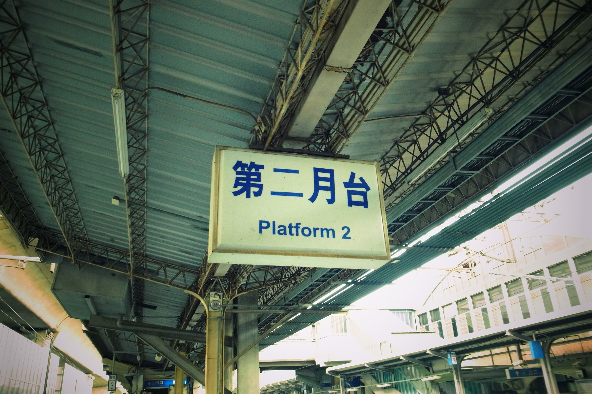
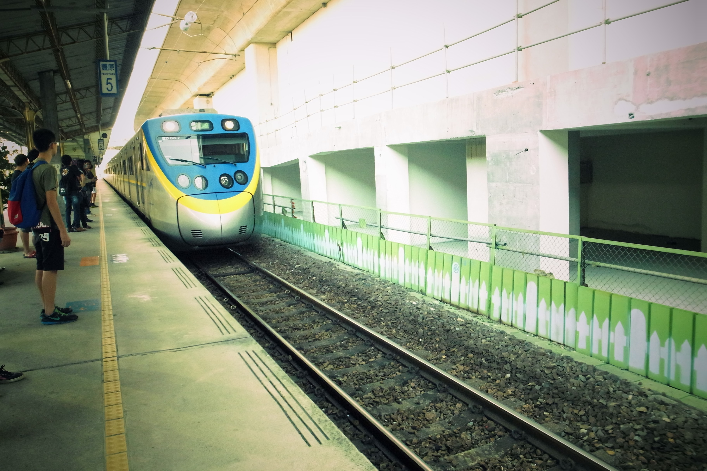
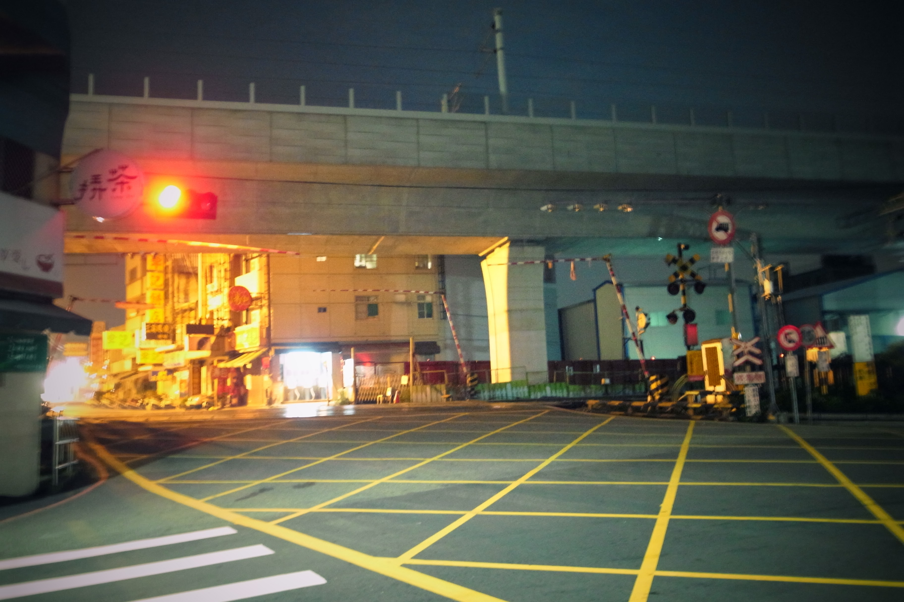

豐原舊站月台上-顯示器
隨著臺中鐵路高架工程完竣與通車之後，建於1960年的第二代豐原火車站，已被拆除。位於臺灣臺中市豐原區，為臺灣鐵路管理局臺中線的鐵路車站。過去曾為臺灣鐵路管理局東勢線（現已廢止）的端點站。2016年10月16日在台中鐵路高架化第一階段工程完工後，啟用新的高架車站。
-

舊站第二月台
-

阿福號緩緩駛進
-

舊站一側-交流道
建於1904年(民國前7年5月15日)，面積267平方公尺，至今已有100多餘年的歷史，期間經歷了36位站長，初名為葫蘆墩驛。1920年(民國9年9月)更名為豐原驛。光復後改名為豐原站。因客貨業務驟增，原有站房不敷使用，改建為鋼筋水泥建築站房，1960年(民國49年11月)落成啟用，新站房分上下兩層，佔地799.5平方公尺，已於105年10月16日啟用高架車站。